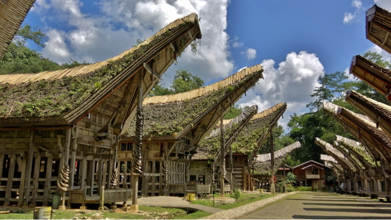
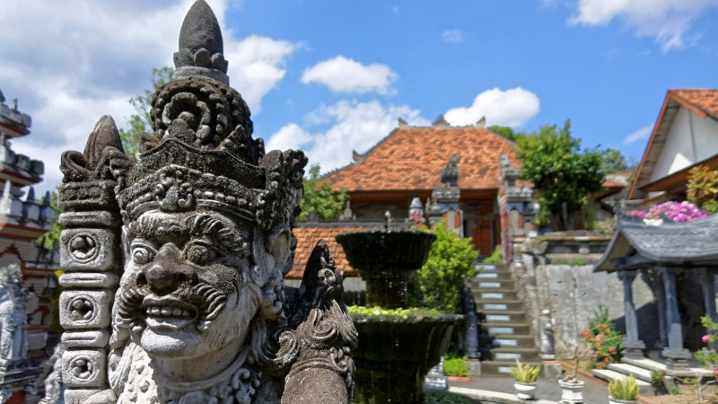
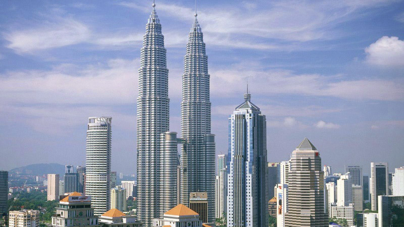
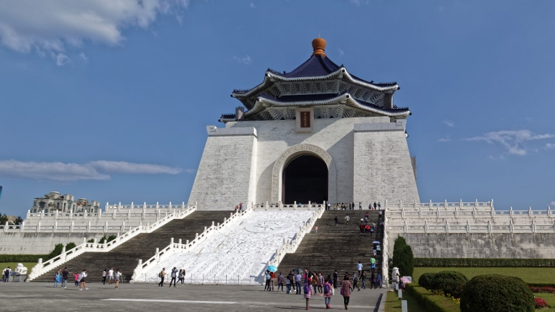
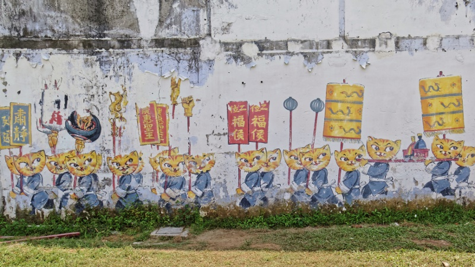

Southeast Asia
Photo Albums

Indonesia
Jakarta, Java
Tajnung Puting, Kalimantan
Yogyakarta, Java
Tana Tohraja, Sulawesi
Jayapura and Wamena, Papua

Sri Lanka
Habarana
Kandy
Nuwara Eliya
Yala
Fort Galle & Hikkaduwa

Bali
Ombak Putih, Java Sea
- Melo village and the Flores harbor
- Melo village dancing
- Onboard the Ombak Putih
- Snorkeling at Pulau Kelor
- Bats at sunset at Pulau Kalong
- Komodo Island and Pantai Merah
- Hawksbill sea turtle
- The crew of the Ombak Putih singing
- Komodo Park and Gili Lawa Darat
- Gili Banta and Kampung Wera
- Pulau Satonda crater lake, Moyo village
- Children swinging into a stream
- Lombok
- Nusa Lembongan
Seminyak/Kuta
Ubud
Munduk
Lovina
Pemuteran
Labuan Bajo, Flores

Malaysia
Georgetown
Cameron Highlands
Malacca (Melaka)
Kota Kinabalu
Sandakan & Kinabatangan
Kuching
Kuala Lumpur

Taiwan

Penang, Malaysia
Penang
- St. Nicholas' Home bike ride
- Balathandayuthapani Temple
- Penang Hill
- Air Itam Dam bike ride
- Batu Feringghi
- St. Nicholas' Home bike ride
- Balik Pulau bike ride
- Sunrise
- Entopia Butterfly House 1
- Entopia Butterfly House 2
- The streets of Georgetown
- Wat Chaiya Mangkalaram
- Sunset on the jetty
- Botanical Garden and Waterfall Temple
- Kek Lok Si Temple